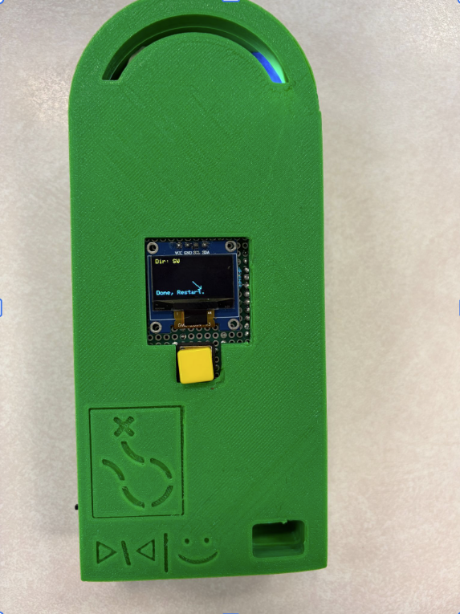
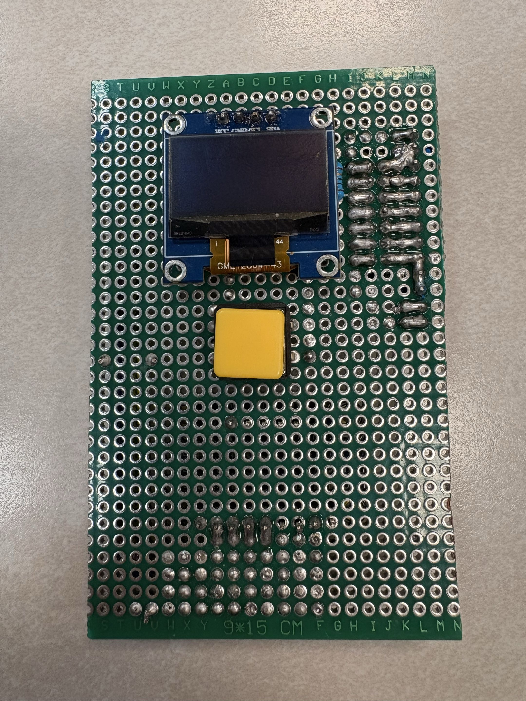
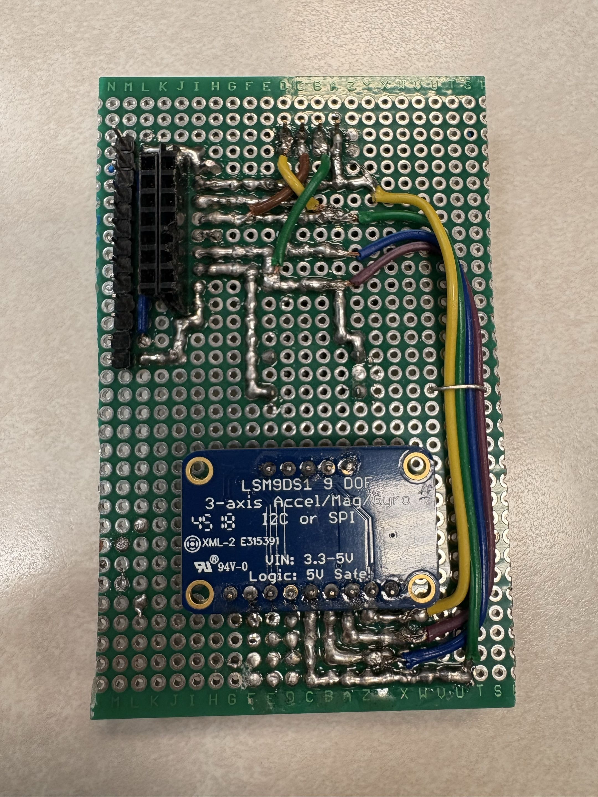
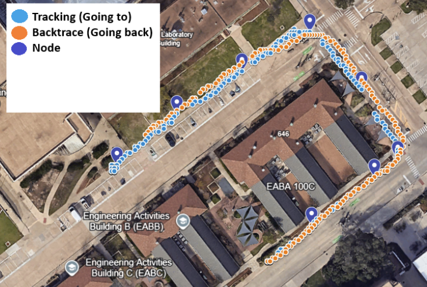
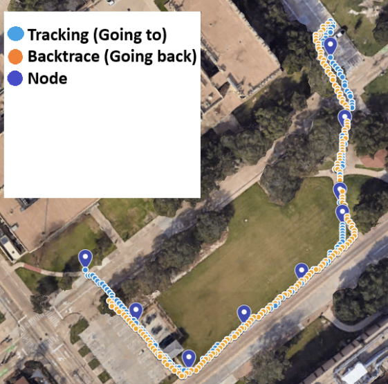
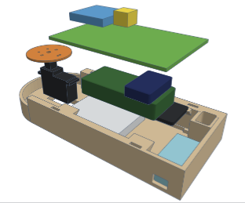

GPS Waypoint Back Tracer
8/3/2026

My second to last semester involved working on what I consider to be a mini-capstone project. It was by-far one of
my favorite school projects. We were paired into groups of two and told to make something using a micro-computer system.
I believe I got lucky when picking my teammate, Lucas. As a computer engineer, knowing the hardware side more, and Lucas,
knowing the software side more, it was a good balance of skill. My first idea was to replicate a defunct
product I saw which would use local radio to send your location to nearby friends allowing you to find each other on hikes.
I have been wanting to make something like this utilizing LoRa radios because of my interest in the meshtastic protocol.
However, this was scrapped as the professor wanted us to add something mechanical to the project. So we pivoted to a GPS
waypoint back tracing device. The idea is that during a hike the device will take waypoints as you walk. When you were done
with the hike the device will guide you back the way you came leading you home. The mechanical portion was a servo with
and LED strapped to it to light up the path and tell you which direction to go. The servo was ultimately useless, but it
fit the mechanical requirements. Our only other idea was a box that would use machine vision to detect if a banana was placed in
it and then it would smash it. It was tempting, but we went with the GPS device.
There were several hurdles that needed to be cleared to get this to work. We needed to choose the main controller design a user interface, understand how to interface and use the GPS, compass and servo motor, power the device, make a case, and create the waypoint and back trace algorithms. We chose to base the design around a Raspberry Pi Zero 2W. This design choice was mainly from the professor, as he told us to use a Raspberry Pi. I wanted to use a proper micro controller like the Pico or an esp32, but looking back using a full computer for this project made the development process a ton easier. We chose the Zero to reduce size and power consumption, but this did mean we had to spend a lot of extra time and effort to setup the device for us to access it.
By far, I am most proud of the user interface. I used a perfboard to create a solid base for the I/O to sit on, a single button, and my favorite hobbyist microcontroller component; an SSD1306 OLED display using I2C. These things are great, small, versatile and only use a 4 pin connection. They are also incredibly cheap. I recently ran a test with one leaving it running continuously displaying 4 different images or animations for just under 2400 hours and I only noticed a slight amount of burn-in. I decided to turn the I/O i made into a "shield" for the Zero. The idea being that we can mount the zero to the "I/O Shield" and connect all other components to the shield which will allow us to easily disassemble the device if we wanted to take a component with us after the project is over, or allow groups after us to more easily salvage parts from the project. It was an overall elegant solution that saved us the pain of soldering to the Pi Zero itself.
We ended up soldering the magnetometer (compass) to the I/O shield, this is because we found out that electronic compasses are extremely touchy. Moving the raspberry pi in relation to the magnetometer, or vice versa, at all messes with the calibration, so we locked the two together. This was a bulk of the hardware as this part was the center of the design, it was also a large portion of my contribution to the project.
There were several hurdles that needed to be cleared to get this to work. We needed to choose the main controller design a user interface, understand how to interface and use the GPS, compass and servo motor, power the device, make a case, and create the waypoint and back trace algorithms. We chose to base the design around a Raspberry Pi Zero 2W. This design choice was mainly from the professor, as he told us to use a Raspberry Pi. I wanted to use a proper micro controller like the Pico or an esp32, but looking back using a full computer for this project made the development process a ton easier. We chose the Zero to reduce size and power consumption, but this did mean we had to spend a lot of extra time and effort to setup the device for us to access it.
By far, I am most proud of the user interface. I used a perfboard to create a solid base for the I/O to sit on, a single button, and my favorite hobbyist microcontroller component; an SSD1306 OLED display using I2C. These things are great, small, versatile and only use a 4 pin connection. They are also incredibly cheap. I recently ran a test with one leaving it running continuously displaying 4 different images or animations for just under 2400 hours and I only noticed a slight amount of burn-in. I decided to turn the I/O i made into a "shield" for the Zero. The idea being that we can mount the zero to the "I/O Shield" and connect all other components to the shield which will allow us to easily disassemble the device if we wanted to take a component with us after the project is over, or allow groups after us to more easily salvage parts from the project. It was an overall elegant solution that saved us the pain of soldering to the Pi Zero itself.
We ended up soldering the magnetometer (compass) to the I/O shield, this is because we found out that electronic compasses are extremely touchy. Moving the raspberry pi in relation to the magnetometer, or vice versa, at all messes with the calibration, so we locked the two together. This was a bulk of the hardware as this part was the center of the design, it was also a large portion of my contribution to the project.


To finish up the hardware design, the next big hurdle was trying to figure out how to power the device. One thing that I seem
to lack from my electrical engineering classes is practical application. I can calculate a voltage divider, but I'm not actually
sure how to use it when there is an inconsistent load being applied. Our lack of knowldege in safely manipulating the voltage would
make it difficult to use off the shelf AA batteries to power it like we planned since it's hard to get 3.3 volts (we actually need slightly more)
out of batteries that are 1.5 volts. And we probably should not use diodes to decrease the voltage since that will use a lot of extra power.
Research online suggests we use a buck converter, however we could not find one that we thought would fit our needs. I really need to
work on my knowledge of converting voltages for electronics projects because this just keeps coming up.
After a lot of research we decided to go with a simple solution and use an Adafruit PowerBoost 1000, featuring a micro USB input, battery management,
and a 5 volt output which works out great for powering the Zero and the servo motor. and the Zero has on-board convertors for getting
the 3.3 volt supply needed for the additional components. It's not a perfect solution but it worked.
The next hurdles were making the servo, magnetometer, and the GPS work. The magnetometer was the greatest challenge out of these. Running into several issues with calibration, interference, and overall accuracy. There is a crazy amount of code behind it and I am very thankful of Lucas for handling all it as I have no clue what was going on there. I focused more on the GPS. We used a NEO-6M module. I had to learn a lot about how GPS works to get positional data. If you are unfamiliar with how GPS works, the amount of math and science behind it is mind boggling.
The connection was via Serial, which was a new one for me, but once you got the serial connection you then needed to decode the output. I have forgotten what all needed to be done, but you needed to decode NMEA sentences and then convert the latitude and longitude into degree formats to do math with. There were a lot of accuracy issues with the positional data we were getting. Apparently GPS does not like to work too well where there are a bunch of tall buildings for the signals to bounce around between, so the middle of campus was not a great place to test our device and made debugging hard. One night our waypoints were very offset from where they should have been, we tried tackling that for hours. Eventually it worked correctly, but we don't know why.
The next hurdles were making the servo, magnetometer, and the GPS work. The magnetometer was the greatest challenge out of these. Running into several issues with calibration, interference, and overall accuracy. There is a crazy amount of code behind it and I am very thankful of Lucas for handling all it as I have no clue what was going on there. I focused more on the GPS. We used a NEO-6M module. I had to learn a lot about how GPS works to get positional data. If you are unfamiliar with how GPS works, the amount of math and science behind it is mind boggling.
The connection was via Serial, which was a new one for me, but once you got the serial connection you then needed to decode the output. I have forgotten what all needed to be done, but you needed to decode NMEA sentences and then convert the latitude and longitude into degree formats to do math with. There were a lot of accuracy issues with the positional data we were getting. Apparently GPS does not like to work too well where there are a bunch of tall buildings for the signals to bounce around between, so the middle of campus was not a great place to test our device and made debugging hard. One night our waypoints were very offset from where they should have been, we tried tackling that for hours. Eventually it worked correctly, but we don't know why.

Here the purple dots are way points, blue dots are tracking going to, and the orange dots are tracking going back. The blue dots and orange
dots were accurate, but the waypoints were not. We eventually tuned the tracking to be accurate and it took us to the last
minute before demo to get it where we wanted. I worked on the algorithm for making the waypoints themselves.
It calculates the distance between two points and if the distance is greater than 8 meters it sets a waypoint.
Lucas worked on the back trace algorithm, which uses the current location, the next waypoint, the current heading
(from magnetometer), and figures out the distance and angle between the device and the waypoint is. That will then use the
OLED display and servo to point the user in the direction they need to go. Once the device is close enough to the waypoint it is
removed from the list and the device then points to the next way point.


Overall we were both very happy with how the project turned out. The professor had us go on a small hike for the demo and it worked
perfectly. This is one of my favorite projects as it required learning a lot and using a lot of my skills, and it resulted in a
physical functional device that we could hold. I hope to work on projects that require the skills needed for this with people
who have different backgrounds.
